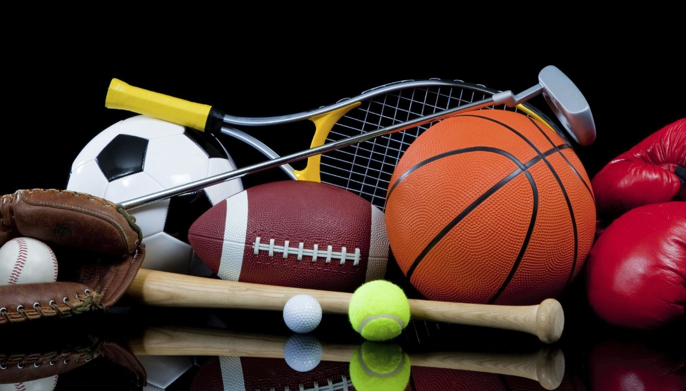

Gallery
Change background color
Change font size
SPORTING MOMENTS
Gallery of events in sports
Sports can always be a celebration! Winning or losing is never the matter.
Events in sports make it the grandstand for sportsmen and sportswomen around the globe
to join hands and celebrate their sportsmanship.
×

![<b>ICC T20 </b><br><br> The ICC T20I (International Cricket Council Twenty20 International) is a version of cricket where each side plays one session, with a total of 20 overs allowed. It is a comparatively new format that was first used in 2005 and has since grown to be one of the most well-liked varieties of cricket all over the globe. T20 cricket is renowned for its frantic, thrilling gaming, which frequently includes powerful batters and adept bowlers. The International Cricket Council, which oversees the ICC T20I, hosts national teams from all over the world in several competitions and games to crown the global champion in this format.](Gallery/cricket2.png)
![<b> Asia Cup </b><br><br>Cricket teams from Asia, including those from India, Pakistan, Sri Lanka, Bangladesh, Afghanistan, and the United Arab Emirates, compete in the Asia Cup. The Asian Cricket Council (ACC) hosts the event, which usually takes place every two years but has recently had an erratic timetable. The tournament's structure has changed over the years, but it usually starts with a round-robin group play and ends with knockout contests. One of the most important cricket competitions in Asia, the Asia Cup has been held annually since 1984. With renowned players and teams displaying their prowess and vying for the title of Asian champions, the event has witnessed some of the most memorable moments in Asian cricket history.](Gallery/cricket3.png)
![<b> IPL </b><br><br>The Indian Premier League (IPL) is an annual competitive Twenty20 cricket competition that takes place in India from March to May. The Board of Control for Cricket in India (BCCI) established it in 2008, and since then it has grown to be one of the most well-known and lucrative cricket competitions in the globe. Eight teams, each made up of both domestic and foreign players, compete in the competition, representing different Indian cities and areas. The IPL is well-known for its intense contests, devoted spectators, and substantial influence on the expansion and improvement of cricket in India and elsewhere.](Gallery/cricket4.png)
![<b> FIFA World Cup </b><br><br>FIFA (Fédération Internationale de Football Association), the organization that oversees international football, organizes the FIFA World Cup. The most important and well-known football tournament in the world, it is conducted every four years. Teams from all over the globe are competing in the tournament, and each squad is representing a different nation. The tournament comprises of a group stage, knockout rounds, and a championship game to crown the World Cup victor. Since the 1930 FIFA World Cup, which was the first to be conducted, it has taken place every four years, except for 1942 and 1946 because of World War II. The current format involves 32 teams competing for the title, and the most successful team in the tournament's history is Brazil, with five titles to their name.](Gallery/football1.png)
![<b> UEFA Champions League </b><br><br> The Union of European Football Associations hosts the UEFA Champions League, a yearly football team tournament. (UEFA). The best football teams from Europe's local divisions compete in one of the most renowned club tournaments in the world. The competition is divided into several phases, beginning with the preliminary rounds and concluding with the final, which is typically conducted in May. The champion of the UEFA Champions League advances for the following year's competition as well as the FIFA Club World Cup. The competition has a long past, featuring several noteworthy events and contributions from some of the best footballers in history.](Gallery/football2.png)
![<b>La Liga</b> <br><br> La Liga, also known as the Campeonato Nacional de Liga de Primera División, is the top professional football league in Spain. It is one of the most prestigious and competitive football leagues in the world, featuring some of the top clubs and players in the sport. The league consists of 20 teams who play against each other twice during a season, with the team that accumulates the most points being crowned as the champions. Some of the most famous and successful clubs in La Liga include Real Madrid, Barcelona, and Atletico Madrid, and the league has produced some of the greatest footballers of all time such as Lionel Messi and Cristiano Ronaldo.](Gallery/football3.png)
![<b>UEFA European Championship</b> <br><br>Every four years, a significant international football competition called the UEFA European Championship, or the Euros, is held. The Union of European Football Associations (UEFA) oversees organizing the tournament, which includes national sides from across Europe. The competition comprises of a group stage, knockout stages, and a final to decide the champion. Along with the FIFA World Cup, the UEFA European Championship debuted in 1960 and has since grown to be one of the most important football competitions in the world. Portugal is the reigning winner after winning the competition in 2016. The following UEFA European Championship is slated for 2024.](Gallery/football4.png)
![<b>NBA</b><br><br> North American professional men's basketball is played in the National Basketball Association (NBA). A total of 30 clubs makes up the division, with 29 from the US and 1 from Canada. Players from all over the world compete in the NBA, which is regarded as the best professional basketball competition in the world. The best eight teams from each conference advance to the postseason after the regular season, which goes from October to April. The winner of the league is decided by the NBA Finals, which are held in June. Some of the largest names in basketball have fought in the NBA over the years, and the league has a rich past and many famous players as its residents.](Gallery/basketball1.png)
![<b>FIBA Basketball World Cup</b><br><br> The FIBA Basketball World Cup is the top international basketball competition run by the International Basketball Federation. (FIBA). National teams from all over the globe compete for the title of world champion in this event, which is conducted every four years. Before the primary tournament, which includes 32 teams, there is a qualification period in which teams participate in regional competitions. Some of the best basketball athletes and teams in history have competed in and won the FIBA Basketball World Cup, which dates back to 1950.](Gallery/basketball2.png)
![<b>Rugby League World Cup</b><br><br> The Rugby League globe Cup is an international competition that draws together the best Rugby League countries from all over the globe every four years. The competition debuted in 1954 and has since grown to be one of Rugby League's most esteemed occasions. Teams from Australia, New Zealand, England, and several other countries participate in the tournament to win the title of global champion. The tournament's structure has changed over the years, but it consists of a group stage, followed by knockout stages, with the winner being named global champion. Rugby League fans from all over the globe look forward to the Rugby League globe Cup, which is regarded as one of the sport's most thrilling and competitive competitions.](Gallery/rugby1.png)
![<b>Champions Hockey League</b><br><br> Professional teams from Europe compete in the Champions Hockey League (CHL), a yearly ice hockey competition. One of the most prestigious ice hockey tournaments in Europe, it was first created in 2014 and has since expanded to impressive proportions. 32 teams representing 13 nations compete in the competition, which usually lasts from August to February. In the group stage, each squad competes in six games and is split into eight groups of four. The best two teams from each group then progress to the knockout stage, which ends with a single-game championship match. The CHL is renowned for the intense rivalry it fosters, and it has hosted many of the best ice hockey teams and athletes from across Europe.](Gallery/hockey2.png)
![<b>League of Legends World Championship</b> <br><br>The largest and most important worldwide gaming competition for the well-known online game League of Legends is the League of Legends World Championship, or Worlds for short. The world's top elite teams participate in it, which Riot Games organizes, to win the title of world winner. The competition usually lasts for several weeks during the group stage and elimination rounds before concluding with a championship game. The victorious team secures their spot in League of Legends annals as the greatest team in the world for that year in addition to receiving a sizeable reward fund.](Gallery/E-sport1.png)